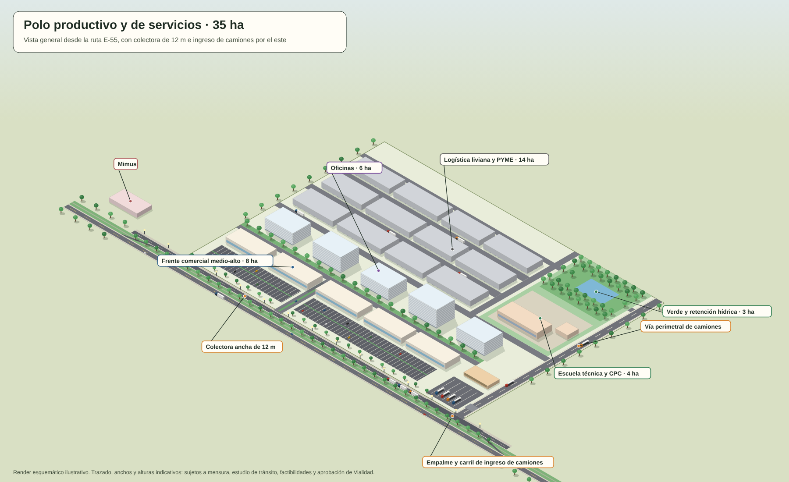
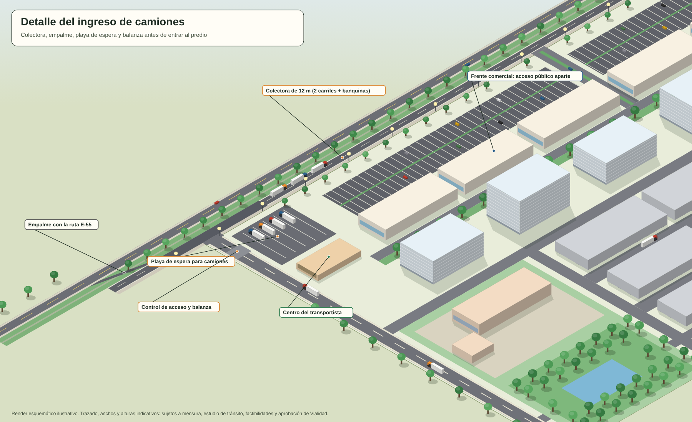
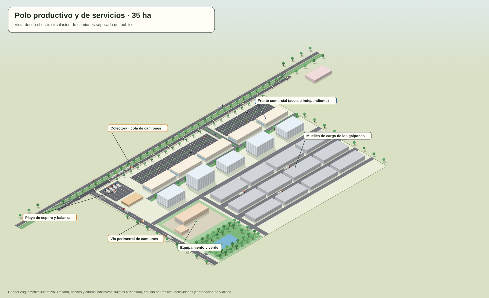
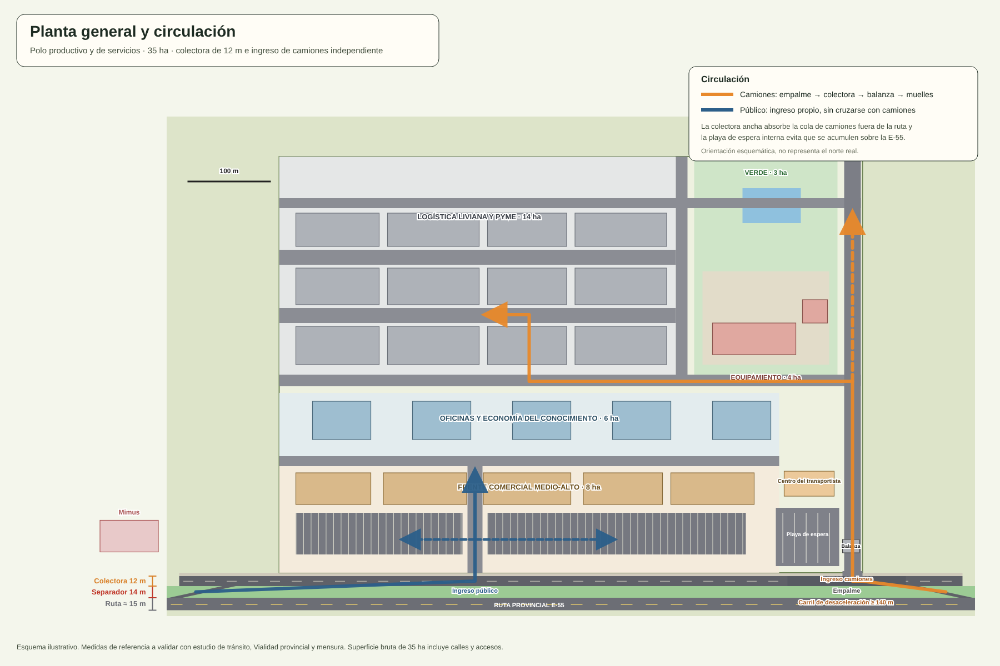
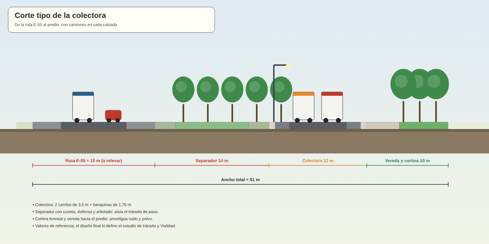

Comercio medio-alto, oficinas, logística liviana y una escuela técnica sobre la ruta 55. Más empleo, más tasas y suelo que financia sus propias obras.
Sobre la ruta provincial 55, frente a Mimus, el municipio puede ordenar 35 hectáreas con usos que se complementan: el frente da valor al suelo, el fondo da empleo y el equipamiento conecta con las becas y el hub de los Pilares 2 y 4. Las cifras son estimaciones de planificación, no datos de proyecto.
| Zona | Superficie | Uso | Empleos estimados |
|---|---|---|---|
| Frente a la ruta | 8 ha | Comercio y servicios medio-alto: gastronomía, salud privada, concesionarias, retail de proximidad | 200–300 |
| Segunda línea | 6 ha | Oficinas, coworking, economía del conocimiento y servicios profesionales | 150–250 |
| Fondo del predio | 14 ha | Logística liviana, PYME y talleres en galpones modulares de 500 a 1.000 m² | 150–200 |
| Equipamiento | 4 ha | Escuela técnica de oficios, centro de salud o CPC, sala de capacitación | 40–60 |
| Verde y retención hídrica | 3 ha | Cortina forestal entre usos, espacio público y control de desagües | — |
| Total | 35 ha | ≈ 540–810 |
Cada una de estas condiciones puede cambiar el proyecto. Son el primer punto de la agenda si la gestión llega a cargo del municipio.
La urbanización completa puede costar entre US$100 y 250 mil por hectárea (estimación sin cotización). Por eso se hace por etapas y con recursos del propio suelo.
| Etapa | Qué se hace | Cómo se financia |
|---|---|---|
| 1 (año 1–2) | Estudios, factibilidades y mensura. Urbanizar unas 5 ha del frente. | Fondos propios mínimos, convenio con el titular y adelantos de futuros adquirentes. |
| 2 (año 2–3) | Venta o concesión de lotes del frente. Calles, red eléctrica y drenaje del fondo. | Producido de lotes, fideicomiso y fondo provincial de infraestructura de parques. |
| 3 (año 3–4) | Galpones modulares, escuela técnica y espacio público. | Alquiler de galpones, aportes provinciales y programas de educación técnica. |
Imágenes esquemáticas e ilustrativas, no son un proyecto. Muestran la colectora ancha de 12 m y el ingreso de camiones separado del público.





Antes de comunicar estas cifras como compromiso, hay que contrastarlas con una tasación, un anteproyecto de urbanización y las factibilidades de servicios.